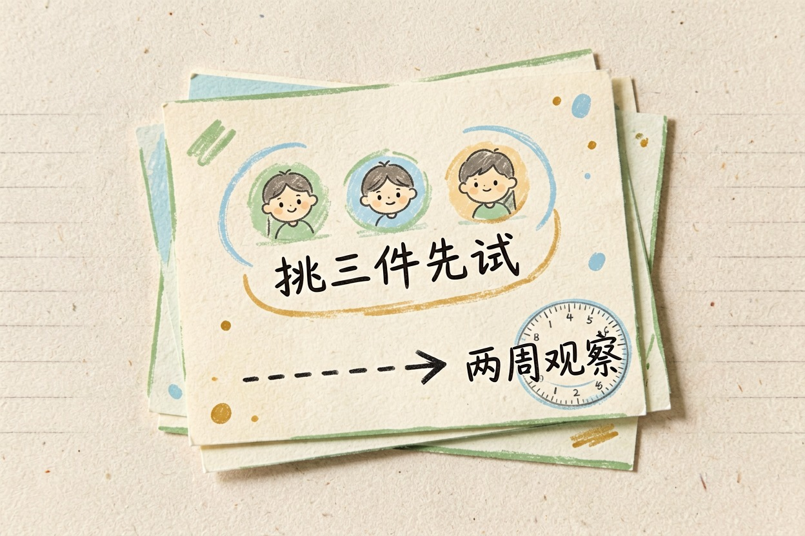
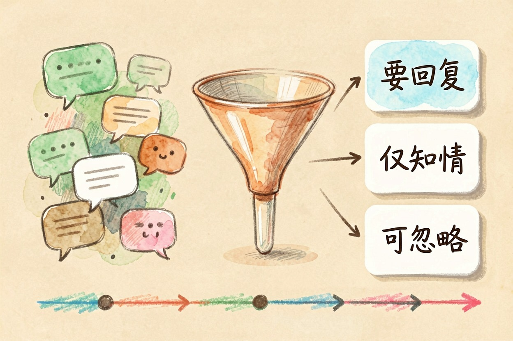
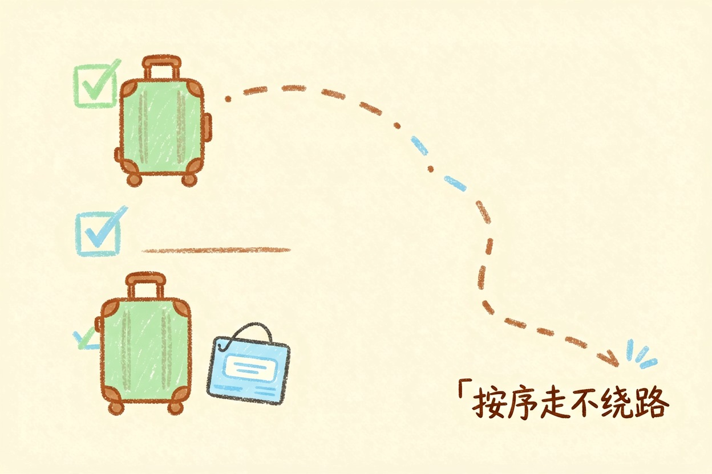
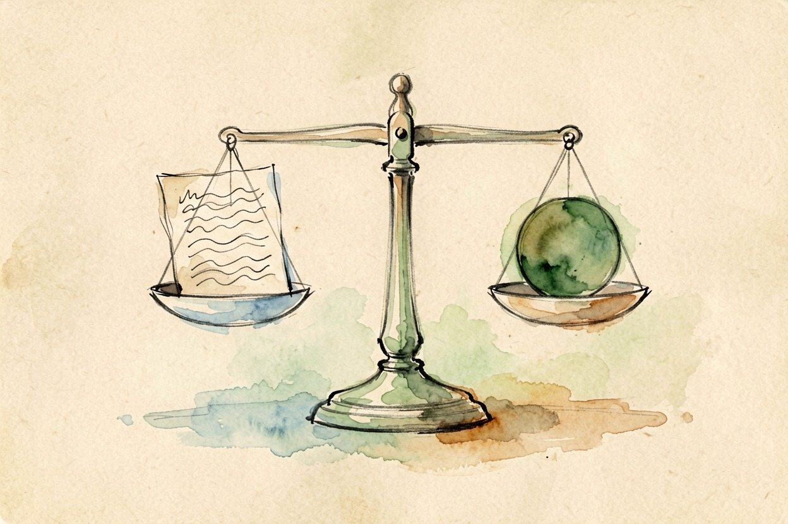

用 AI 打理日常生活？八件真能省时间的事 — Learntide
每天都有琐事占着脑子，让人没法专心。把重复活交给 AI，你只管做判断和决定。
先弄清 ai能帮忙做什么 再动手

你如果刚接触这类工具，先别急着全都用上。ai能帮忙做什么，关键看你把任务拆得多细。它擅长整理、归纳、起草和提醒。它不擅长替你做最后的决定。
先把每天重复的活列出来。再从中挑三件交给 AI。其余的先照旧处理。新手最容易一上来就全交，结果反而更乱。你也看不清哪步出了问题。先小范围试两周，顺手了再慢慢加。别指望一次就配齐所有环节。工具多了也容易挑花眼，先固定一两个。
用 AI 整理每天的信息流

微信、邮件、群消息堆在一起很烦。把重点贴给 AI，让它给出三行摘要。你只看摘要，再决定要不要细看原文。
固定一个时间集中处理。别让消息随时打断你的思路。看久了你会更清楚哪些群值得留。不重要的就静音，每天少看很多废话。
摘要本身也是记录。一周后回看，你能看出时间花在了哪。这种习惯人工很难坚持。AI 帮你省了抄写工夫。每天省下的注意力，能用在更值的事上。你也能让它把摘要翻成英文发同事。晚上的消息留到第二天早上看。
请把下面这些消息按「要回复 / 仅知情 / 可忽略」三档分类，
每类给一句中文摘要，不超过 30 字：
{{粘贴今日消息}}让 AI 帮你写清单和提醒

出门前总怕漏东西。把行程告诉 AI，让它出一张清单。你照着勾选就行，省得在门口犹豫。
它还能把清单转成提醒话术。你复制到闹钟或待办软件里，省得自己记。周末采购也能用，让它排顺序，你照着走不绕路。
旅行前更实用。把行李、证件、充电线都列上。你过一遍，漏带概率小很多。回程前再让 AI 列一张要办的事。清单越具体，你越安心。买菜前把清单截图，结账快很多。清单写细点，省得现场想。
用 AI 处理重复性的小事
填表、改写、翻译短句，这些最费神。交给 AI 做初稿，你改最后一句。速度能快不少。
写邮件也是。先给要点，让 AI 扩成正文。你再压短一点。整理照片命名也行，让 AI 归类，你回头好找。
改文案也常见。把啰嗦的话贴过去，让它收紧。你拿来做标题或结尾。这类小活积起来，一天能省半小时。把省下的时间拿去休息，比多刷手机强。长文档也能让它出目录。翻译完自己读一遍，别全信。
这些事还是别全交给 AI
钱的事、合同的事、别人的隐私，先自己看。AI 给的只是草稿，不是结论。拿不准就去问人。
健康的事也别全信。它给的建议仅供参考，真不舒服还是看医生。你可以去 AI 工具导航里挑合适的助手。
挑之前先看它能不能导出你的数据。把活分出去，自己留时间做判断。工具是帮你省时间，不是替你担责任。记住 ai能帮忙做什么 有边界，别让它替你担责任。

本文信息核对于 2026-08-08。AI 产品的价格、免费额度与功能变动频繁，实际以各工具官网当前说明为准。